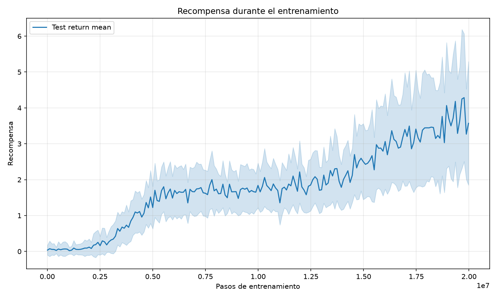
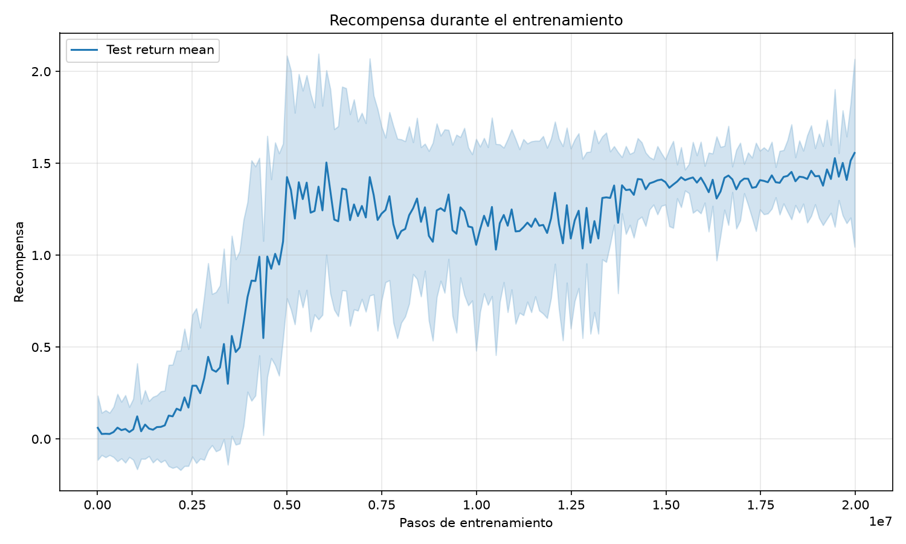
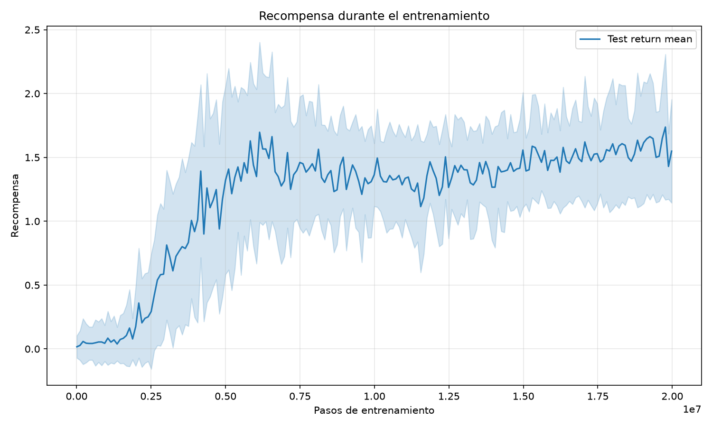
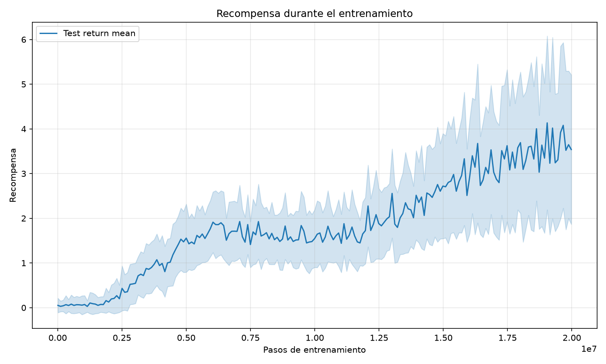
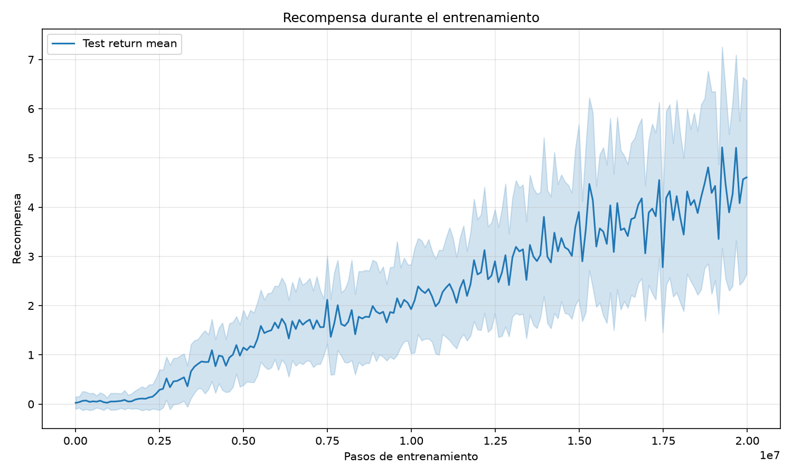

| Hiperparámetros | Retorno | |||||||||
|---|---|---|---|---|---|---|---|---|---|---|
| Exp | α | γ | Clip del gradiente | Capa escondida | Tamaño del batch | Coeficiente de entropía | Max | Media | std | Último |
| 1 | 0.00033818 | 0.97 | 20 | 256 | 16 | 0.013298 | 0.80833 | 0.2353 | 0.17945 | 0.76667 |
| 2 | 0.00040361 | 0.97 | 5 | 128 | 32 | 0.0013875 | 0.20833 | 0.11529 | 0.02913 | 0.091667 |
| 3 | 0.00046832 | 0.995 | 5 | 256 | 16 | 0.0020072 | 1.1104 | 0.35055 | 0.29377 | 0.83333 |
| 4 | 0.00025683 | 0.995 | 20 | 256 | 16 | 0.015317 | 0.82188 | 0.23603 | 0.17822 | 0.54375 |
| 5 | 0.00093407 | 0.995 | 10 | 64 | 16 | 0.02286 | 0.75312 | 0.2548 | 0.15418 | 0.73229 |
| 6 | 0.0001706 | 0.97 | 5 | 256 | 32 | 0.0033064 | 0.18542 | 0.11396 | 0.029842 | 0.17604 |
| 7 | 0.00022749 | 0.99 | 5 | 256 | 32 | 0.04744 | 0.18542 | 0.11396 | 0.029842 | 0.17604 |
| 8 | 0.00015369 | 0.97 | 20 | 256 | 32 | 0.042585 | 0.18542 | 0.11396 | 0.029842 | 0.17604 |
| 9 | 0.00054225 | 0.95 | 5 | 128 | 32 | 0.029204 | 0.20833 | 0.11529 | 0.02913 | 0.091667 |
| 10 | 0.00017571 | 0.97 | 5 | 256 | 32 | 0.045138 | 0.18542 | 0.11396 | 0.029842 | 0.17604 |
| 11 | 0.00020182 | 0.97 | 20 | 128 | 64 | 0.0017195 | 0.20833 | 0.11529 | 0.02913 | 0.091667 |
| 12 | 0.00020732 | 0.995 | 5 | 128 | 64 | 0.019486 | 0.20833 | 0.11529 | 0.02913 | 0.091667 |
| 13 | 0.00076198 | 0.99 | 5 | 128 | 32 | 0.007328 | 0.20833 | 0.11529 | 0.02913 | 0.091667 |
| 14 | 0.000154 | 0.995 | 20 | 64 | 16 | 0.029611 | 0.24792 | 0.13897 | 0.03448 | 0.17812 |
| 15 | 0.00016975 | 0.995 | 5 | 64 | 32 | 0.0036668 | 1.3823 | 0.89069 | 0.45183 | 1.3823 |
| 8 | 0.00099249 | 0.995 | 5 | 256 | 16 | 0.016639 | 1.5354 | 1.0315 | 0.44232 | 1.5354 |
| 9 | 0.00013007 | 0.99 | 5 | 128 | 64 | 0.0027907 | 0.092708 | 0.049418 | 0.017271 | 0.027083 |
| 16 | 0.00010296 | 0.95 | 10 | 64 | 32 | 0.024847 | 0.20104 | 0.13219 | 0.031301 | 0.15625 |
| 10 | 0.00065738 | 0.995 | 20 | 64 | 32 | 0.021908 | 0.095833 | 0.053147 | 0.017938 | 0.055208 |
| 11 | 0.00031914 | 0.995 | 5 | 128 | 32 | 0.0041927 | 0.092708 | 0.049418 | 0.017271 | 0.027083 |
| 17 | 0.00020697 | 0.95 | 5 | 128 | 32 | 0.014804 | 0.20833 | 0.11529 | 0.02913 | 0.091667 |
| 12 | 0.00037754 | 0.97 | 10 | 256 | 32 | 0.0049767 | 0.098958 | 0.045934 | 0.014933 | 0.046875 |
| 18 | 0.00077674 | 0.95 | 5 | 128 | 64 | 0.02688 | 0.20833 | 0.11529 | 0.02913 | 0.091667 |
| 13 | 0.00011542 | 0.99 | 20 | 64 | 32 | 0.0019422 | 0.095833 | 0.053147 | 0.017938 | 0.055208 |
| 14 | 0.00012624 | 0.97 | 10 | 256 | 32 | 0.0011409 | 0.098958 | 0.045934 | 0.014933 | 0.046875 |
| 19 | 0.0005185 | 0.99 | 10 | 256 | 32 | 0.0014496 | 0.18542 | 0.11396 | 0.029842 | 0.17604 |
| 15 | 0.0004826 | 0.99 | 20 | 128 | 64 | 0.0019069 | 0.092708 | 0.049418 | 0.017271 | 0.027083 |
| 16 | 0.0002921 | 0.995 | 20 | 256 | 32 | 0.03574 | 0.098958 | 0.045934 | 0.014933 | 0.046875 |
| 20 | 0.00090636 | 0.97 | 10 | 128 | 64 | 0.0015036 | 0.20833 | 0.11529 | 0.02913 | 0.091667 |
| 17 | 0.00077494 | 0.95 | 5 | 64 | 64 | 0.021261 | 0.095833 | 0.053147 | 0.017938 | 0.055208 |
| 21 | 0.00017188 | 0.995 | 20 | 128 | 64 | 0.005429 | 0.20833 | 0.11529 | 0.02913 | 0.091667 |
| 18 | 0.00054537 | 0.97 | 20 | 256 | 64 | 0.0031452 | 0.098958 | 0.045934 | 0.014933 | 0.046875 |
| 19 | 0.00057351 | 0.97 | 10 | 64 | 64 | 0.0098209 | 0.095833 | 0.053147 | 0.017938 | 0.055208 |
| 22 | 0.00063875 | 0.995 | 20 | 128 | 32 | 0.019609 | 0.092708 | 0.049226 | 0.017925 | 0.052083 |
| 20 | 0.00012856 | 0.99 | 20 | 128 | 64 | 0.01123 | 0.092708 | 0.049418 | 0.017271 | 0.027083 |
| 21 | 0.00059881 | 0.995 | 5 | 128 | 16 | 0.0013941 | 1.2396 | 0.68611 | 0.45016 | 1.1781 |
| 23 | 0.00074236 | 0.97 | 10 | 128 | 32 | 0.016115 | 0.20833 | 0.11529 | 0.02913 | 0.091667 |
| 22 | 0.00012895 | 0.97 | 20 | 64 | 64 | 0.005774 | 0.095833 | 0.053147 | 0.017938 | 0.055208 |
| 24 | 0.00013294 | 0.99 | 20 | 128 | 64 | 0.0013301 | 0.092708 | 0.049713 | 0.017364 | 0.05 |
| 23 | 0.00040768 | 0.995 | 10 | 128 | 64 | 0.0026982 | 0.092708 | 0.049418 | 0.017271 | 0.027083 |
| 24 | 0.00020704 | 0.995 | 20 | 128 | 16 | 0.03627 | 0.81042 | 0.19998 | 0.19891 | 0.675 |
| 25 | 0.00017509 | 0.95 | 20 | 128 | 32 | 0.0011721 | 0.20833 | 0.11529 | 0.02913 | 0.091667 |
| 25 | 0.00022696 | 0.95 | 10 | 256 | 64 | 0.00248 | 0.098958 | 0.045934 | 0.014933 | 0.046875 |
| 26 | 0.00051566 | 0.97 | 20 | 256 | 32 | 0.0015266 | 0.098958 | 0.045934 | 0.014933 | 0.046875 |
| 26 | 0.00013357 | 0.95 | 5 | 128 | 32 | 0.0010302 | 0.20833 | 0.11529 | 0.02913 | 0.091667 |
| 27 | 0.00083492 | 0.95 | 10 | 128 | 16 | 0.042966 | 3.6052 | 0.99601 | 1.07 | 3.125 |
| 28 | 0.00084125 | 0.995 | 5 | 128 | 64 | 0.0089738 | 0.17083 | 0.12093 | 0.029 | 0.088542 |
| 29 | 0.00065807 | 0.97 | 10 | 128 | 16 | 0.0016471 | 1.4052 | 0.75425 | 0.49103 | 1.3979 |
| 28 | 0.00030071 | 0.99 | 20 | 128 | 32 | 0.013832 | 0.20833 | 0.11529 | 0.02913 | 0.091667 |
| 30 | 0.00035263 | 0.99 | 20 | 256 | 64 | 0.047298 | 0.098958 | 0.045934 | 0.014933 | 0.046875 |
| 29 | 0.00044753 | 0.97 | 5 | 128 | 64 | 0.0013966 | 0.20833 | 0.11529 | 0.02913 | 0.091667 |
| 31 | 0.00010033 | 0.99 | 5 | 64 | 32 | 0.013036 | 0.095833 | 0.053147 | 0.017938 | 0.055208 |
| 32 | 0.00066563 | 0.99 | 5 | 128 | 32 | 0.0022851 | 0.092708 | 0.049418 | 0.017271 | 0.027083 |
| 30 | 0.00057538 | 0.95 | 20 | 256 | 64 | 0.024616 | 0.18542 | 0.11396 | 0.029842 | 0.17604 |
| 33 | 0.00011115 | 0.99 | 5 | 256 | 16 | 0.0056408 | 0.5125 | 0.20438 | 0.14769 | 0.29896 |
| 34 | 0.00032302 | 0.95 | 20 | 128 | 64 | 0.0016624 | 0.092708 | 0.049418 | 0.017271 | 0.027083 |
| 35 | 0.00059392 | 0.97 | 5 | 256 | 16 | 0.0055264 | 1.2312 | 0.69999 | 0.34172 | 1 |
| 36 | 0.00018653 | 0.97 | 10 | 128 | 64 | 0.0017848 | 0.092708 | 0.049418 | 0.017271 | 0.027083 |
| 37 | 0.00078409 | 0.97 | 20 | 128 | 16 | 0.0083527 | 2.0656 | 1.0431 | 0.57275 | 2.0656 |
| 38 | 0.00030438 | 0.97 | 10 | 64 | 64 | 0.0030328 | 0.095833 | 0.053147 | 0.017938 | 0.055208 |
| 39 | 0.00011459 | 0.97 | 5 | 64 | 16 | 0.010406 | 0.13958 | 0.071638 | 0.02454 | 0.051042 |
| 40 | 0.00071718 | 0.995 | 5 | 256 | 64 | 0.038473 | 0.098958 | 0.045934 | 0.014933 | 0.046875 |
| 41 | 0.00018431 | 0.97 | 10 | 256 | 64 | 0.005036 | 0.098958 | 0.045934 | 0.014933 | 0.046875 |
| 42 | 0.00017773 | 0.95 | 10 | 64 | 16 | 0.0021571 | 0.24167 | 0.1121 | 0.045789 | 0.13958 |
| 43 | 0.00040403 | 0.99 | 5 | 64 | 16 | 0.0018039 | 0.87812 | 0.2549 | 0.20874 | 0.86354 |
| 44 | 0.0003296 | 0.95 | 20 | 256 | 16 | 0.022119 | 1.7531 | 0.75775 | 0.5302 | 1.3385 |
| 45 | 0.00018101 | 0.995 | 10 | 128 | 16 | 0.0045898 | 0.32812 | 0.13244 | 0.082591 | 0.32812 |
| 46 | 0.00038961 | 0.97 | 10 | 64 | 16 | 0.0030428 | 0.73646 | 0.18904 | 0.15396 | 0.68229 |
| 47 | 0.0003096 | 0.99 | 5 | 64 | 64 | 0.014249 | 0.095833 | 0.053147 | 0.017938 | 0.055208 |
| 48 | 0.00063765 | 0.995 | 10 | 256 | 16 | 0.0047997 | 1.399 | 0.69112 | 0.53684 | 1.3469 |
| 49 | 0.00050535 | 0.99 | 20 | 128 | 16 | 0.015109 | 1.7937 | 0.9987 | 0.61464 | 1.4042 |
| 50 | 0.00060423 | 0.995 | 5 | 128 | 64 | 0.0034964 | 0.092708 | 0.049418 | 0.017271 | 0.027083 |





Random search de parámetros sobre IPPO
Exploración de otros algoritmos